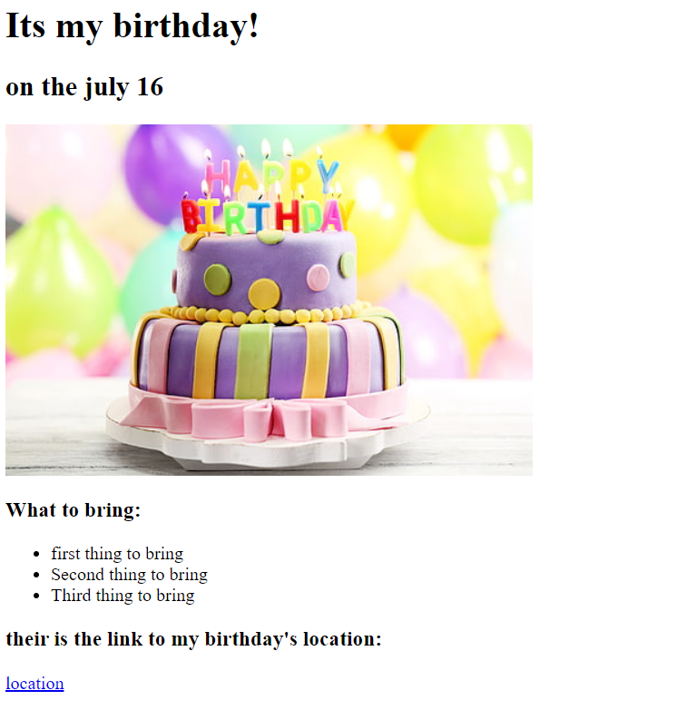
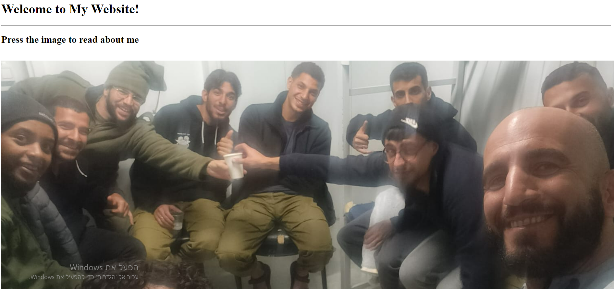

My first websites kulululu
Welcome to my first website. hope you'll enjoy it!
I'm proud to show you my first projects
project number 1 (click on the image to go to the web):

project number 2 (click on the image to go to the web):

Contact Me
About Me